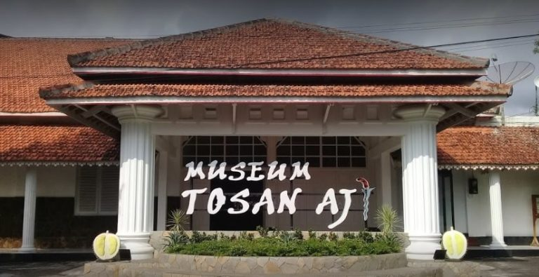
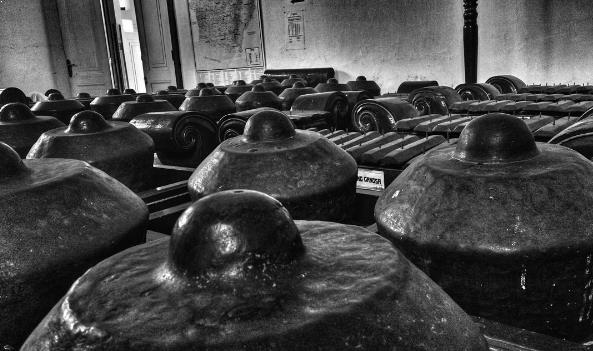
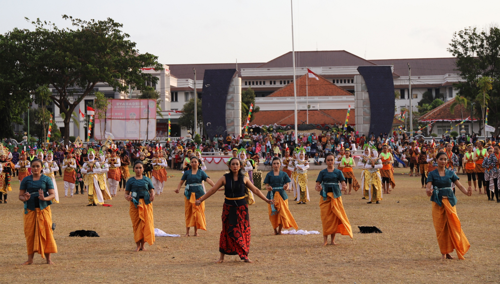

Sejarah
Museum Tosan Aji diresmikan pada tanggal 13 April 1987 oleh Gubernur KDH Tingkat I Jawa tengah Bapak Ismail. Lokasi museum pada waktu itu terletak di Pendopo Kawedanan Kutoarjo. Pada tanggal 10 Juni 2001 oleh Pemerintah Kabupaten dipindah dari Kutoarjo ke kota Purworejo menempati bangunan bekas Pengadilan Negeri pada zaman Belanda, yaitu di jalan Mayjend Sutoyo No. 10 atau sebelah selatan alun-alun Purworejo. Hal tersebut dilakukan sebagai upaya mewujudkan lokasi terpadu beberapa bangunan bersejarah, seperti Masjid Agung Darul Mutaqin di sebelah barat alun-alun dengan Bedug Pendowonya terbesar di Indonesia mungkin di dunia, dan Museum di sebelah selatan.
Museum Tosan Aji merupakan museum khusus yang menyajikan satu jenis koleksi yaitu Tosan Aji (keris). Tosan Aji merupakan salah satu hasil budaya bangsa sebagai warisan nenek moyang yang menunjukan salah satu identitas budaya bangsa. Suasana di museum ternyata didesain sedemikian rupa agar seakan-akan menikmati alam bersejarah kota Purworejo. Alat, bahan, dan keris yang sudah ada disajikan tepat di ruang paling depan, kita dapat pertama kali menikmati dan mengetahui proses pembuatan keris budaya leluhur bangsa.
Seiring perkembangannya, Museum Tosan Aji tidak hanya menyajikan koleksi Tosan Aji saja, namun juga menampilkan berbagai koleksi benda cagar budaya yang banyak ditemukan di wilayah purworejo, baik pada masa prasejarah maupun masa klasik. Koleksi cagar budaya menambah daya tarik tersendiri bagi para pengunjung. Disamping pengetahuan yang diperoleh ternyata ketakjuban juga dengan kekayaan alam yang dimiliki kota Purworejo.
Koleksi
Sebagai salah satu museum yang berada di Provinsi jawa Tengah, museum ini memiliki koleksi yang juga seringkali ditemukan di Jawa Tengah sebagai pusaka yang memiliki nilai sejarah dan budaya yang cukup tinggi.
Keris adalah salah satu pusaka yang menjadi koleksi dari Museum Tosan Aji yang dulunya adalah sebuah museum yang terletak di Kutoarjo dan sekarang sudah dipindahkan ke Purworejo sejak tanggal 10 Juni 2001. Inilah salah satu museum di Indonesia yang memamerkan beberapa pusaka terutama keris.
Keris sendiri menjadi salah satu pusaka yang identik dengan beberapa kerajaan di Jawa. Desainnya yang cukup unik sebagai sebuah senjata, membuat keris menjadi salah satu bagian dari benda-benda yang memiliki nilai sejarah yang tinggi. Hampir semua masyarakat baik di Jawa dan juga di Indonesia Mengetahuinya.
Warisan bersejarah ini juga menjadi salah satu warisan yang cukup penting. Senjata yang selalu digunakan oleh raja-raja atau orang-orang penting pada masa-masa kerajaan di Jawa. Hal ini yang menjadikan keris memiliki nilai sejarah tersendiri.
Di museum ini, kita akan menemukan beberapa benda-benda pusaka yang bahkan terdiri dari 1000 lebih benda pusaka termasuk keris, tombak, pedang, kujang, granggang, cundrik dan lain sebagainya.
Benda pusaka tersebut berasal dari beberapa kerajaan di Jawa seperti Majapahit dan juga Pajajaran. Koleksi inilah yang menjadi salah satu daya tarik di museum ini.
Selain itu, masih ada banyak lagi peninggalan sejaran lainnya seperti beberapa benda-benda cagar budaya peninggalan dari beberapa kerajaan seperti Gamelan Kuno Kyai Cokronegoro di mana gamelan ini sendiri ternyata memiliki nilai sejarah yang cukup penting.
Lebih jauh mengenai gamelan yang menjadi koleksi dari museum ini, ternyata gamelan tersebut memiliki nilai sejarah yang cukup penting di mana Gamelan Kyai Cokronegoro.
Benda koleksi ini ternyata adalah sebuah hadiah yang diberikan kepada Bupati Purworejo yang pertama yaitu Cokronegoro I. Diberikan oleh Sri Susuhunan Pakubowono VI. Selain gamelan ini , kita juga akan menemukan beberapa benda-benda cagar budaya lainnya seperti arca, prasasti, lingga, fragmen, yoni, guci, lumping, batu gong, gerabah, beliung, fosil dan menhir.
Peninggalan tersebut adalah koleksi yang bisa kita temukan di museum ini, sehingga menjadi tempat yang layak untuk dikunjungi. Terutama bagi para pelajar yang ingin mengetahui secara langsung bentuk fisik dan sejarah detil dari benda-benda tersebut.
Perayaan
Selain koleksi diatas kita juga akan menemukan beberapa event yang sering digelar di Museum Tosan Aji. Diantaranya adalah event Jamasan Tosan Aji yang dilakukan setiap tanggal 1 Muhharam atau 1 Suro. Ada juga event Ruwatan Tosan Aji yang juga dilakukan pada tanggal yang sama.
Jamasan Tosan Aji
Jamasan berarti memandikan, mensucikan, membersihkan, merawat dan memelihara. Sebagai suatu wujud rasa berterimakasih dan menghargai peninggalan atas karya adiluhung para generasi pendahulunya kepada para generasi berikutnya. Tujuannya adalah orang yang memiliki pusaka tetap mempunyai jalinan rahsa, ikatan batin, terhadap sejarah dan makna yang ada di balik benda pusaka. Si pemilik benda pusaka dapat mengingat para pendahulunya yang telah berhasil menciptakan suatu karya seni dan budaya yang mempunyai seabrek nilai luhur. Sehingga jamasan pusaka tidak sekedar membersihkan dan merawat fisik benda pusaka saja, tetapi lebih penting adalah memahami segenap nilai-nilai luhur yang terkandung di dalam benda pusaka.
Ruwatan Tosan Aji
Seperti acaran ruwatan pada umumnya yang mengelar acara wayang (nanggap wayang) sebagai upacara pemurnian dan rasa syukur atas berkat dan rahmat-Nya.